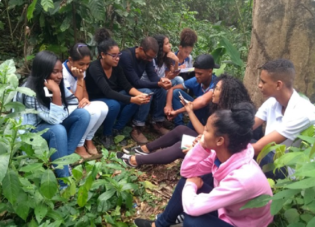

Educação Ambiental na Prática com Uso de Aplicativos
A educação ambiental deixou de ser um tema restrito a salas de aula ou campanhas pontuais. Com o avanço da
tecnologia, aplicativos transformaram-se em ferramentas práticas para engajar pessoas, promover hábitos
sustentáveis e conectar teoria à ação no dia a dia. Ao combinar informação, interatividade e gamificação,
essas plataformas tornam a preservação do planeta uma experiência tangível e colaborativa.

Como Aplicativos Promovem Educação Ambiental
1. Gamificação e Recompensas
Apps como Ecosia (busca online que planta árvores) e JouleBug(desafios sustentáveis)
transformam ações
ecológicas em jogos, com rankings, badges e recompensas.
Exemplo: No JouleBug, usuários ganham pontos por reduzir consumo de água, reciclar ou
usar transporte
público.
2. Monitoramento de Impacto Individual
Plataformas como Olá Climae Carbon Footprint Calculatorpermitem
calcular emissões de CO₂ pessoais e sugerem metas para reduzi-las.
Apps de rastreamento de hábitos, como My Little Plastic Footprint, ajudam a visualizar
e diminuir o uso de plástico.
3. Aprendizado por Realidade Aumentada (AR)
Apps como WWF Free Rivers (simulação de ecossistemas aquáticos) e
iNaturalist(identificação de espécies) usam AR para educar sobre biodiversidade e
conservação.
4. Comunidades e Ações Coletivas
O Too Good To Go(combate ao desperdício de alimentos) e
Freecycle(doação de itens) incentivam a colaboração local, fortalecendo redes de
consumo consciente.
Aplicativos que Transformam Conhecimento em Ação
| Área de Atuação |
Exemplos de Apps |
Funcionalidade |
| Consumo Consciente |
Think Dirty, Good On You |
Escaneiam produtos para avaliar impacto ambiental e social. |
| Biodiversidade |
iNaturalist, Seek |
Identificam espécies de plantas e animais com inteligência artificial. |
| Reciclagem |
Cataki, ReciclaBC |
Localizam pontos de coleta e ensinam a separar resíduos corretamente. |
| Agricultura Urbana |
GrowStuff, Plantit |
Oferecem tutoriais para cultivo de hortas caseiras e compostagem. |
Benefícios da Educação Ambiental Digital
Acesso Democrático:Conteúdo gratuito ou de baixo custo, disponível para milhões de
usuários.
Engajamento de Jovens:A linguagem interativa e visual atrai gerações conectadas.
Dados em Tempo Real:Sensores em apps como AirVisualmonitoram qualidade
do ar, gerando alertas locais.
Mudança de Comportamento:Relatórios personalizados (ex.: economia de água no
Dropcountr)mostram o impacto das ações do usuário.
Desafios e Soluções
Acesso Limitado à Tecnologia:Populações sem smartphones ou internet ficam excluídas.
- Solução: Parcerias com governos e ONGs para disponibilizar dispositivos em espaços públicos.
Desinformação:Conteúdo não checado pode disseminar dados errados.
- Solução: Apps com curadoria de especialistas, como
Earth Hero(baseado em ciência
climática).
Engajamento Contínuo:Manter usuários ativos após a novidade inicial.
- Solução: Atualizações frequentes, recompensas e comunidades online (ex.: grupos no
OLIO).
Futuro: Integração com Tecnologias Emergentes
Inteligência Artificial (IA): Chatbots como EcoBot(dúvidas sobre
reciclagem) ou apps
que personalizam dicas sustentáveis conforme o perfil do usuário.
Blockchain:Certificação transparente de produtos sustentáveis (ex.: rastreamento de
cadeias produtivas no Fairfood).
IoT (Internet das Coisas):Sensores em lixeiras inteligentes conectadas a apps, como o
Bin-e, que orientam a separação de resíduos.
Para superá-los, projetos como Escola Digital (Gov.br) oferecem capacitação gratuita, enquanto parcerias com
ONGs garantem que desafios virtuais resultem em plantios de árvores ou limpezas de rios.
A educação ambiental não precisa ser teórica ou distante da realidade. Aplicativos são pontes entre o
conhecimento e a prática, capacitando indivíduos a agir de forma proativa pela sustentabilidade. Ao combinar
tecnologia, criatividade e engajamento comunitário, essas ferramentas democratizam o acesso à informação e
provam que pequenas ações, quando multiplicadas, têm poder transformador. O futuro da conscientização
ecológica está na palma da mão – literalmente.